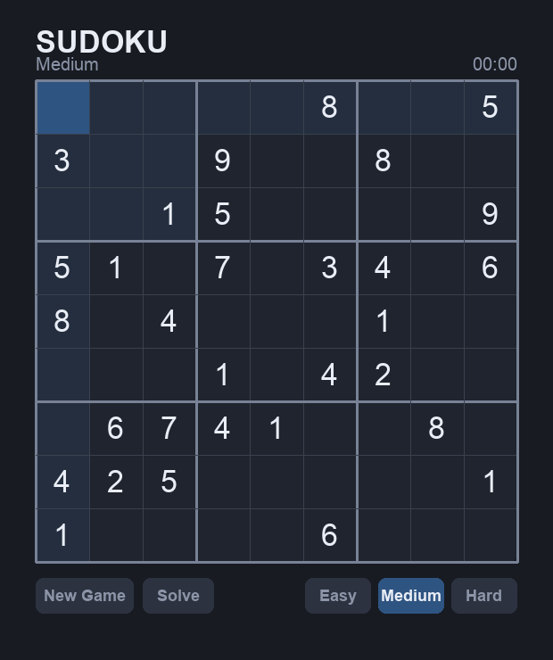
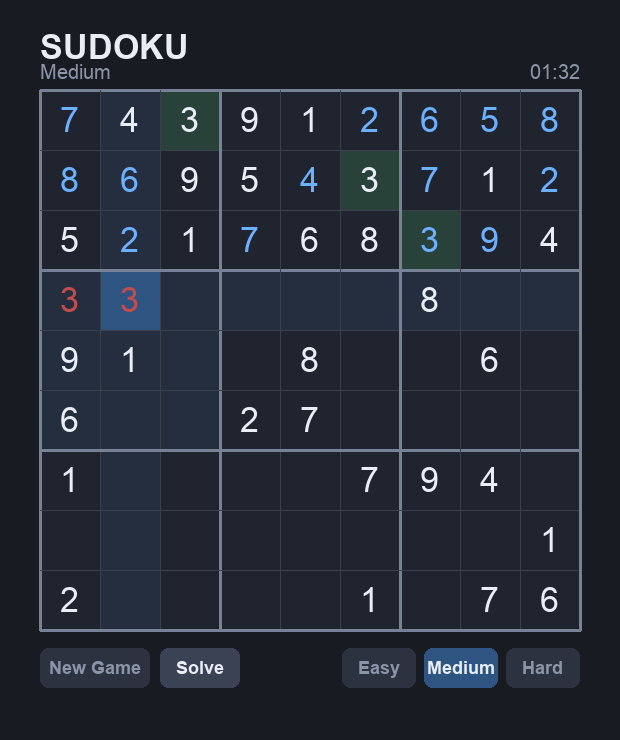
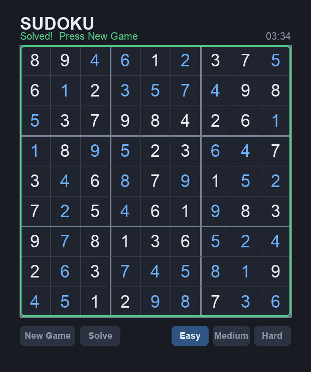

You already know Python basics. This isn't a copy-the-code tutorial — it's a series of challenges. Each one gives you a goal, a way to think it through, and a way to know when you've nailed it. You write the code. The hints and solutions are there if you get stuck, but reach for them last.



This is what you're going to build.
A finished game looks like a wall of code, and that's intimidating. The trick pros use is simple: you never build the whole thing at once. You break it into pieces small enough that each one is obvious, get each piece working on its own, then snap them together.
The single most important idea in this whole project:
Why does that matter? Because if your solver is broken, you want to discover that by
print()-ing a grid — not by squinting at pixels. Every challenge
below respects that split: challenges 1–5 are pure brain (no window at all), and 6 onward
add the face.
Get Python and pygame installed, and open an empty window that stays open until you close it.
Before any Sudoku logic, you need proof your tools work. Installing a library and opening a window is the "hello world" of game programming. A pygame program has a shape you'll reuse all project long: set up once, then loop forever — check for events, draw, repeat — until the user quits.
python3 --version).Stuck? Open these one at a time — challenge yourself to use as few as you can.
Two separate jobs here: install the library, then run a minimal program. To install a Python package you use pip from the terminal (not from inside Python). To keep a window open, remember that a program ends the instant it runs out of lines — so you need something that keeps it going.
Install once from the terminal: pip install pygame (or pip3).
Every pygame program needs these moves: pygame.init(), then
pygame.display.set_mode((width, height)) to make the window. A
while loop keeps it alive: each pass, read events with
pygame.event.get(); when you see an event of type
pygame.QUIT, stop the loop and call pygame.quit().
After drawing each frame, pygame.display.flip() shows it.
import pygame
pygame.init()
screen = pygame.display.set_mode((540, 540))
pygame.display.set_caption("Sudoku")
running = True
while running:
for event in pygame.event.get():
if event.type == pygame.QUIT:
running = False
screen.fill((24, 27, 34)) # dark background
pygame.display.flip() # show what we drew
pygame.quit()Why the loop? Without it, the program reaches the end and exits instantly — the window flashes and disappears. The loop keeps the program alive and, every pass, re-checks "did anything happen?" and re-draws the screen.
Decide how a Sudoku grid lives in memory, and print one to the terminal so you can read it.
This is a design decision, and it shapes everything after it. A Sudoku board is 9 rows of 9 numbers. What Python structure naturally holds "rows of things"? How will you represent an empty cell — a number you'll never confuse with a real answer is ideal.
Once you've picked a structure, ask: to read the value in row 3, column 5, what would you type? If that's awkward, your structure is wrong. Get this right and the rest of the project gets easier.
Stuck? Open these one at a time — challenge yourself to use as few as you can.
You want a container that holds "rows of things," where each row is itself a container of 9 numbers. Python has a type that nests inside itself perfectly for this. And for "empty," pick a value that can never be confused with a real answer (1–9).
A list of lists is the natural fit: the outer list is the rows, each inner
list is 9 numbers. Use 0 for an empty cell — real answers are 1–9, so
0 can never be mistaken for one.
Then board[row][col] reads or sets any cell. To print nicely, loop
over the rows and build a string for each; swap 0 for a . so gaps are visible.
# 0 means "empty". Real answers are 1-9.
board = [
[5, 3, 0, 0, 7, 0, 0, 0, 0],
[6, 0, 0, 1, 9, 5, 0, 0, 0],
[0, 9, 8, 0, 0, 0, 0, 6, 0],
[8, 0, 0, 0, 6, 0, 0, 0, 3],
[4, 0, 0, 8, 0, 3, 0, 0, 1],
[7, 0, 0, 0, 2, 0, 0, 0, 6],
[0, 6, 0, 0, 0, 0, 2, 8, 0],
[0, 0, 0, 4, 1, 9, 0, 0, 5],
[0, 0, 0, 0, 8, 0, 0, 7, 9],
]
def print_board(board):
for row in board:
line = ""
for num in row:
line += (str(num) if num != 0 else ".") + " "
print(line)
print_board(board)
print(board[0][0]) # -> 5
board[0][2] = 4 # fill one empty cell
An empty grid is handy too:
[[0] * 9 for _ in range(9)] builds nine separate rows of nine zeros.
(Watch out: [[0]*9]*9 looks the same but reuses one row — a classic trap.)
Write a function that answers one question: can number n go in a given cell without breaking Sudoku's rules?
This one function is the heart of the entire game — the solver, the generator, and the mistake-checker all lean on it. Sudoku has exactly three rules. A number is allowed only if it does not already appear in:
Rows and columns are easy to loop over. The 3×3 box is the tricky part: given a cell at
(row, col), which box is it in, and where does that box start? Play with
the numbers on paper: cell (4, 7) — what are the top-left coordinates of its box? See if a pattern
with // 3 (integer division) falls out.
is_valid(board, row, col, num) returns True or False.is_valid(board, 0, 2, 5) → should be False (5 is already in row 0).is_valid(board, 0, 2, 4) → should be True.Stuck? Open these one at a time — challenge yourself to use as few as you can.
There are three independent checks — row, column, box — and the number is only legal if it passes all three. The row and column are easy loops. Put your energy into the box: given a cell, can you figure out which 3×3 box it belongs to, and where that box starts?
Row and column: loop i from 0 to 8 and check
board[row][i] (the row) and board[i][col] (the column).
The box: the top-left corner is 3 * (row // 3),
3 * (col // 3). For (4, 7): 3*(4//3)=3 and
3*(7//3)=6 — so the box runs rows 3–5, columns 6–8.
i 0→8: if board[row][i] == num or
board[i][col] == num, return False.box_row = 3 * (row // 3) and box_col = 3 * (col // 3).r over box_row .. box_row+2 and
c over box_col .. box_col+2: if any
board[r][c] == num, return False.True.def is_valid(board, row, col, num):
# rule 1 & 2: not already in this row or this column
for i in range(9):
if board[row][i] == num or board[i][col] == num:
return False
# rule 3: not already in this 3x3 box
box_row = 3 * (row // 3)
box_col = 3 * (col // 3)
for r in range(box_row, box_row + 3):
for c in range(box_col, box_col + 3):
if board[r][c] == num:
return False
return True # passed all three rulesWhy // 3 then * 3?
Integer-dividing by 3 collapses 0,1,2 → 0 and 3,4,5 → 1 (which box you're in). Multiplying back by 3
gives the box's starting row/column. It's a rounding-down-to-the-nearest-3 trick.
Write a function that solves any solvable board by filling it in completely.
This is the big-idea challenge. You can't "calculate" a Sudoku answer with a formula — you have to search. The technique is called backtracking, and once it clicks, you'll see it everywhere (mazes, puzzles, AI). The idea:
Notice step 2 says "solve the rest the same way" — a function that calls itself. That's recursion. The hard part isn't the code (it's short); it's trusting that the same function will handle "the rest of the board." Draw it out for a 2-cell example if you need to.
solve(board) fills the board in place and returns True when solved.False for a board that has no solution.False instead of hanging?Stuck? Open these one at a time — challenge yourself to use as few as you can.
Two ingredients. First, a tiny helper that finds the next empty cell (or reports there are none). Second, the solver calls itself to handle "the rest of the board." The mental hurdle isn't the code — it's trusting recursion. Try tracing it on a board with just two empty cells, on paper, until you believe it works.
Write a helper find_empty(board) that returns the
(row, col) of the first 0, or None if the board is full.
Then solve follows the four steps: if find_empty
returns None, you're done. Otherwise try each num 1–9;
when it's valid, place it and recurse; if the recursion fails, undo it and try the next number.
spot = find_empty(board). If it's None, return True.row, col = spot.num in 1–9: if is_valid(board, row, col, num):
board[row][col] = numsolve(board) is True, return Trueboard[row][col] = 0 (the crucial undo) and keep loopingreturn False.def find_empty(board):
for r in range(9):
for c in range(9):
if board[r][c] == 0:
return r, c
return None # no empties -> board is full
def solve(board):
spot = find_empty(board)
if spot is None:
return True # nothing empty = solved!
row, col = spot
for num in range(1, 10):
if is_valid(board, row, col, num):
board[row][col] = num # guess
if solve(board): # can the rest be solved?
return True
board[row][col] = 0 # no -> undo (backtrack)
return False # 1-9 all failed hereThe one line that makes it "backtracking" is
board[row][col] = 0. Without that undo, failed guesses pile up and pollute
the board. With it, the search cleanly explores every possibility and abandons dead ends.
Produce a complete, valid, random 9×9 solution — a different one each time you run it.
To make puzzles, you first need full boards to carve them out of. Here's the clever part: you already wrote almost all of this in Challenge 3. Your solver fills an empty board — but it always tries 1, 2, 3… in the same order, so it always produces the same grid.
What single change would make it produce a random grid instead? Think about that "try 1–9 in order" loop. If the order were shuffled each time, where would that lead?
Stuck? Open these one at a time — challenge yourself to use as few as you can.
You already wrote almost all of this in Challenge 3. Your solver fills an empty board — but it always tries 1, then 2, then 3… in the same order, so it always builds the same grid. What one thing could you randomize so the finished grid comes out different each time?
Start from an empty board ([[0]*9 for _ in range(9)]). Copy your
solve function, but instead of for num in range(1, 10),
build nums = list(range(1, 10)), call
random.shuffle(nums), and loop over nums.
Because the first choices are random, the whole solved grid comes out random.
import random
def full_solution():
board = [[0] * 9 for _ in range(9)]
def fill(board):
spot = find_empty(board)
if spot is None:
return True
row, col = spot
nums = list(range(1, 10))
random.shuffle(nums) # <- the only real change
for num in nums:
if is_valid(board, row, col, num):
board[row][col] = num
if fill(board):
return True
board[row][col] = 0
return False
fill(board)
return boardSame backtracking engine as Challenge 3 — just fed its choices in random order. Reusing a working function instead of writing a new one is exactly the instinct to build.
Take a full solution and remove numbers to make a playable puzzle — with difficulty levels, and (the pro move) a guarantee that it has only one answer.
A puzzle is just a full solution with holes punched in it. More holes = harder. So: pick cells at random and set them to 0. How many you remove becomes your difficulty setting.
But there's a subtle trap that separates a toy from a real Sudoku: a proper puzzle has exactly one solution. If you remove too much, the remaining clues might allow two different valid answers — which feels broken to a player. How could you check whether a board still has a unique solution? You have a solver… what if you taught it to count solutions instead of stopping at the first? Then only remove a number if the count stays at 1.
Stuck? Open these one at a time — challenge yourself to use as few as you can.
A puzzle is just a full solution with holes punched in it, so the removing part is easy — pick cells and set them to 0, and let "how many you remove" be your difficulty. The real thinking is the uniqueness catch: how could you check whether the puzzle still has only one answer? You built something in Challenge 3 that could be adapted to count answers instead of finding just one.
Copy the full solution. Make a list of all 81 coordinates, shuffle it, and walk through it removing cells until you've removed N (N depends on difficulty).
For the uniqueness stretch: write count_solutions(board) — it's your
backtracker, but instead of returning True on the first solve, it adds up
how many complete fills exist (stop early once you've found 2 — you only care "one vs. more than one").
solution = full_solution(); copy it into puzzle.cells = [(r, c) for r in range(9) for c in range(9)] and shuffle it.count_solutions(copy_of_puzzle) isn't
exactly 1, put the saved value back (removing it broke uniqueness); otherwise count it as removedpuzzle and solution.DIFFICULTY = {"Easy": 40, "Medium": 50, "Hard": 56} # cells to remove
def count_solutions(board, limit=2):
spot = find_empty(board)
if spot is None:
return 1
row, col = spot
total = 0
for num in range(1, 10):
if is_valid(board, row, col, num):
board[row][col] = num
total += count_solutions(board, limit)
board[row][col] = 0
if total >= limit: # 2 is enough to know it's "not unique"
break
return total
def make_puzzle(difficulty="Medium"):
solution = full_solution()
puzzle = [row[:] for row in solution] # deep-ish copy
holes = DIFFICULTY[difficulty]
cells = [(r, c) for r in range(9) for c in range(9)]
random.shuffle(cells)
removed = 0
for r, c in cells:
if removed >= holes:
break
saved = puzzle[r][c]
puzzle[r][c] = 0
if count_solutions([row[:] for row in puzzle]) != 1:
puzzle[r][c] = saved # removing it broke uniqueness -> undo
else:
removed += 1
return puzzle, solutionNotice the pattern repeating: guess → check → undo if bad. It's the same backtracking instinct from Challenge 3, now used to remove clues safely. One good idea, reused three times.
🧠 The brain is done. You can generate and solve real puzzles in the terminal. Everything below puts a face on it.
Draw your 9×9 grid in the pygame window: the lines (with bold lines between boxes) and every clue number.
The screen is a grid of pixels; your board is a grid of cells. Drawing is really just a
translation between the two. If each cell is, say, 60 pixels wide, then cell
(row, col) lives at pixel x = col * 60,
y = row * 60. Get that mapping straight and everything else is detail.
Stuck? Open these one at a time — challenge yourself to use as few as you can.
The whole job is translating cell coordinates into pixel coordinates. If each
cell is CELL pixels wide, then cell (row, col)
starts at pixel x = col * CELL, y = row * CELL.
For the lines, think about which ones separate the 3×3 boxes — those are the ones you want thicker.
Draw lines with pygame.draw.line(screen, color, start, end, width).
Loop i from 0 to 9; make the width 3 when i % 3 == 0, else 1.
For numbers: make a font once with pygame.font.SysFont("Arial", 34).
Each frame, glyph = font.render(str(n), True, color) gives you an image of
the digit; screen.blit(glyph, (x, y)) stamps it. To center it, offset by
half the leftover space: x + (CELL - glyph.get_width()) // 2.
screen.fill((24, 27, 34)).i 0→9. Draw one vertical line from (i*CELL, 0)
to (i*CELL, 9*CELL) and one horizontal line the same way, using width 3
when i % 3 == 0 else 1.(r, c). If board[r][c] isn't 0,
render it to a glyph and blit it centered in that cell.pygame.display.flip().CELL = 60 # pixels per cell
font = pygame.font.SysFont("Arial", 34)
def draw_board(screen, board):
screen.fill((24, 27, 34))
# grid lines: thick every 3rd line to mark the boxes
for i in range(10):
w = 3 if i % 3 == 0 else 1
color = (120, 130, 150) if i % 3 == 0 else (58, 64, 78)
pygame.draw.line(screen, color, (i * CELL, 0), (i * CELL, 9 * CELL), w)
pygame.draw.line(screen, color, (0, i * CELL), (9 * CELL, i * CELL), w)
# numbers, centered in their cells
for r in range(9):
for c in range(9):
n = board[r][c]
if n != 0:
glyph = font.render(str(n), True, (233, 237, 245))
x = c * CELL + (CELL - glyph.get_width()) // 2
y = r * CELL + (CELL - glyph.get_height()) // 2
screen.blit(glyph, (x, y))Call draw_board(screen, board) every frame inside your loop,
right before pygame.display.flip().
Let the player click a cell to select it, and draw a highlight on the selected cell.
Drawing was cells → pixels. Clicking is the reverse: pixels → cells. When the player clicks at pixel
(mx, my), which cell is that? If a cell is 60 px, then
col = mx // 60 and row = my // 60. Store that
(row, col) as "the selected cell," and in your draw function, paint that one
square a different color before drawing the lines.
As a nice touch, let the arrow keys move the selection too — how would you nudge the stored row/col by ±1?
Stuck? Open these one at a time — challenge yourself to use as few as you can.
Drawing went cells → pixels. A click is the exact reverse: pixels → cells. If a cell is
CELL pixels, then a click at (mx, my) lands in
column mx // CELL and row my // CELL. Integer
division does the "which cell" math for you.
In the event loop, watch for event.type == pygame.MOUSEBUTTONDOWN.
The click position is event.pos → (mx, my).
Convert and store: selected = (my // CELL, mx // CELL).
In draw_board, if selected isn't
None, draw a filled pygame.Rect in that cell's
square before the grid lines so the lines stay on top. For arrow keys, nudge the stored row or
column by ±1 (wrap with % 9).
# in the event loop:
if event.type == pygame.MOUSEBUTTONDOWN:
mx, my = event.pos
selected = (my // CELL, mx // CELL) # pixels -> (row, col)
# in draw_board, before drawing the grid lines:
if selected is not None:
r, c = selected
rect = pygame.Rect(c * CELL, r * CELL, CELL, CELL)
pygame.draw.rect(screen, (46, 84, 130), rect) # highlight
# arrow keys (event.type == pygame.KEYDOWN):
if event.key == pygame.K_UP and selected:
selected = ((selected[0] - 1) % 9, selected[1])
# ...down/left/right adjust the other index the same wayUsing % 9 makes the selection wrap around the edges — a
small touch that feels polished.
Let the player type 1–9 into the selected cell, and clear it with 0 or Backspace — but never let them overwrite an original clue.
Now the board becomes interactive. When a number key is pressed and a cell is selected, write that number into the board. Two design questions worth pausing on:
pygame.K_1. Is there a pattern connecting the key to the digit it means?Stuck? Open these one at a time — challenge yourself to use as few as you can.
Two questions to crack. (1) How do you know a pressed key is one of 1–9, and turn it into that number? The key constants aren't random — look at how they're numbered. (2) How do you stop the player editing an original clue? You'll need to remember, for all 81 cells, which ones came from the puzzle. What structure could store a True/False for every cell?
The key constants are consecutive: pygame.K_1 through
pygame.K_9. So if pygame.K_1 <= event.key <= pygame.K_9,
the digit is event.key - pygame.K_0.
When you generate the puzzle, build a parallel 9×9 grid of True/False:
given[r][c] = (puzzle[r][c] != 0). Before writing to a cell, check
if not given[r][c]:.
r, c = selected.if not given[r][c]: (clues are off-limits).pygame.K_1 <= event.key <= pygame.K_9, set
board[r][c] = event.key - pygame.K_0.K_0, K_BACKSPACE, or
K_DELETE, set board[r][c] = 0.# built once when the puzzle is made:
given = [[puzzle[r][c] != 0 for c in range(9)] for r in range(9)]
# in the KEYDOWN handling, with `selected` = (row, col):
if selected is not None:
r, c = selected
if not given[r][c]: # never edit a clue
if pygame.K_1 <= event.key <= pygame.K_9:
board[r][c] = event.key - pygame.K_0
elif event.key in (pygame.K_0, pygame.K_BACKSPACE, pygame.K_DELETE):
board[r][c] = 0Tip for the face: in draw_board, color
clue numbers differently from player-entered numbers (e.g. white vs. blue) by checking
given[r][c]. That's exactly what the screenshots up top do.
Highlight in red any number the player entered that breaks a Sudoku rule.
Good games give feedback. When a number conflicts with another, show it. You already have the tool to
detect this — is_valid from Challenge 2. There's just one wrinkle: a number
that's already placed will "see itself" and look invalid. How do you check a placed number
fairly? (Trick: temporarily lift it out, test, then put it back.)
Build a set of all conflicting (row, col) positions each frame, then in your
draw function, render those digits in red instead of the normal color.
Stuck? Open these one at a time — challenge yourself to use as few as you can.
You already have the detector — is_valid from Challenge 2. The only
wrinkle: a number that's already sitting in the cell will find itself and look like a
duplicate. How could you test a placed number fairly, as if the cell were empty?
Loop every cell. For a non-empty cell holding n: set that cell to 0,
call is_valid(board, r, c, n), then set it back to n.
If it wasn't valid, add (r, c) to a conflicts set.
Lifting the number out first is what stops it from clashing with itself. Then in
draw_board, color any cell in that set red.
def find_conflicts(board):
bad = set()
for r in range(9):
for c in range(9):
n = board[r][c]
if n == 0:
continue
board[r][c] = 0 # lift it out...
if not is_valid(board, r, c, n): # ...test fairly...
bad.add((r, c))
board[r][c] = n # ...put it back
return badIn draw_board: if (r, c) in conflicts:
use red, elif given[r][c]: use white, else: use blue.
Three colors, three meanings — instant, readable feedback.
Notice when the puzzle is completely and correctly solved, and show a victory message.
When is a game won? The simplest, most reliable answer: when the player's board matches the solution
your generator already handed you (Challenge 5). Compare the two, cell by cell. If they're identical,
set a won flag and change what you draw (a message, a colored outline).
Ask yourself when to check — every frame? Only after a number is entered? Both work; one does less pointless work.
Stuck? Open these one at a time — challenge yourself to use as few as you can.
What's the simplest, most reliable definition of "won"? You're already holding the answer key —
the solution your generator returned. If the player's board matches it,
the game is won. No rule-checking needed; just a comparison.
You kept solution from make_puzzle. A win is
simply board == solution — Python compares lists of lists element by
element for you. Check it right after a number is placed; if true, flip a won = True flag.
def is_win(board, solution):
return board == solution # exact match, cell for cell
# after placing a number:
if is_win(board, solution):
won = True
# in draw_board, when won:
# draw a green outline around the grid and show "Solved!" textBecause your generator guarantees a unique solution, "matches the solution" and "is a valid completed Sudoku" mean the same thing here — so this simple check is airtight.
Add clickable buttons — New Game, Solve, and Easy/Medium/Hard — plus a running timer. This ties every piece together into the finished game.
pygame has no built-in buttons, which is actually a great lesson: a button is just a rectangle you draw plus a check for "was the click inside that rectangle?" You already know how to read clicks (Challenge 7) and how to draw rectangles and text (Challenge 6). A button is those two ideas combined.
make_puzzle(...) and reset the state.solve() on a copy of the puzzle and show it (this is your solver from Challenge 3, on display at last).pygame.time.get_ticks(). Subtract a saved start time to get elapsed; convert to minutes:seconds.Stuck? Open these one at a time — challenge yourself to use as few as you can.
pygame has no built-in button, and that's the whole lesson: a button is just a rectangle you draw plus a check for "was the click inside that rectangle?" You already know how to draw rectangles/text (Challenge 6) and read clicks (Challenge 7) — a button is those two ideas combined. The timer is simpler still: pygame can tell you how many milliseconds have passed.
Store each button as a pygame.Rect plus what it does. To draw it: fill
the rect, blit its label centered. To handle a click: on
MOUSEBUTTONDOWN, loop your buttons and check
rect.collidepoint(event.pos) — that's a built-in "is this point inside me?" test.
Timer: save start = pygame.time.get_ticks() when a game begins. Each
frame (until won), elapsed = pygame.time.get_ticks() - start.
Then minutes, seconds = divmod(elapsed // 1000, 60).
rect and an
action label (e.g. "new", "solve", "Easy").draw_board, draw each button's rect and centered label.MOUSEBUTTONDOWN, loop the buttons; the first whose
rect.collidepoint(event.pos) is True decides what happens:
"new"/difficulty → make_puzzle(...) and reset; "solve" →
solve() a copy of the puzzle.start time; each frame until won,
recompute elapsed and format it with
divmod(elapsed // 1000, 60).# each button: a rectangle + an action label
buttons = [
{"label": "New Game", "action": "new", "rect": pygame.Rect(40, 620, 110, 40)},
{"label": "Solve", "action": "solve", "rect": pygame.Rect(160, 620, 80, 40)},
# ... Easy / Medium / Hard similarly
]
# handling a click:
if event.type == pygame.MOUSEBUTTONDOWN:
for b in buttons:
if b["rect"].collidepoint(event.pos):
if b["action"] == "new":
puzzle, solution = make_puzzle(difficulty)
board = [row[:] for row in puzzle]
elif b["action"] == "solve":
board = [row[:] for row in puzzle]
solve(board) # your Challenge 3 solver, live!
break
# timer, each frame until won:
elapsed = pygame.time.get_ticks() - start
mins, secs = divmod(elapsed // 1000, 60)
clock_text = f"{mins:02d}:{secs:02d}"You did it. Every button here just calls functions you already wrote. That's the whole reward of separating brain from face: the "game" is a thin layer of clicks and drawing on top of solid logic. Compare your result to the screenshots at the top.
You've built the whole game. If you want to keep going, here are real features to design on your own — no solutions given, because now you can figure them out:
json.Every one of these builds on a function you already have. That's not a coincidence — it's what good structure buys you.
Look back at what happened: you wrote is_valid once, and it powered
the solver, the generator, and the mistake-checker. You wrote a backtracker once, and reused its
shape three more times. The window at the end was a thin skin over logic you'd already proven in the terminal.
That's the real skill — not memorizing pygame, but breaking a scary problem into small honest pieces and reusing your own work. Every big program you ever write is built exactly this way. Nice job. 🎉